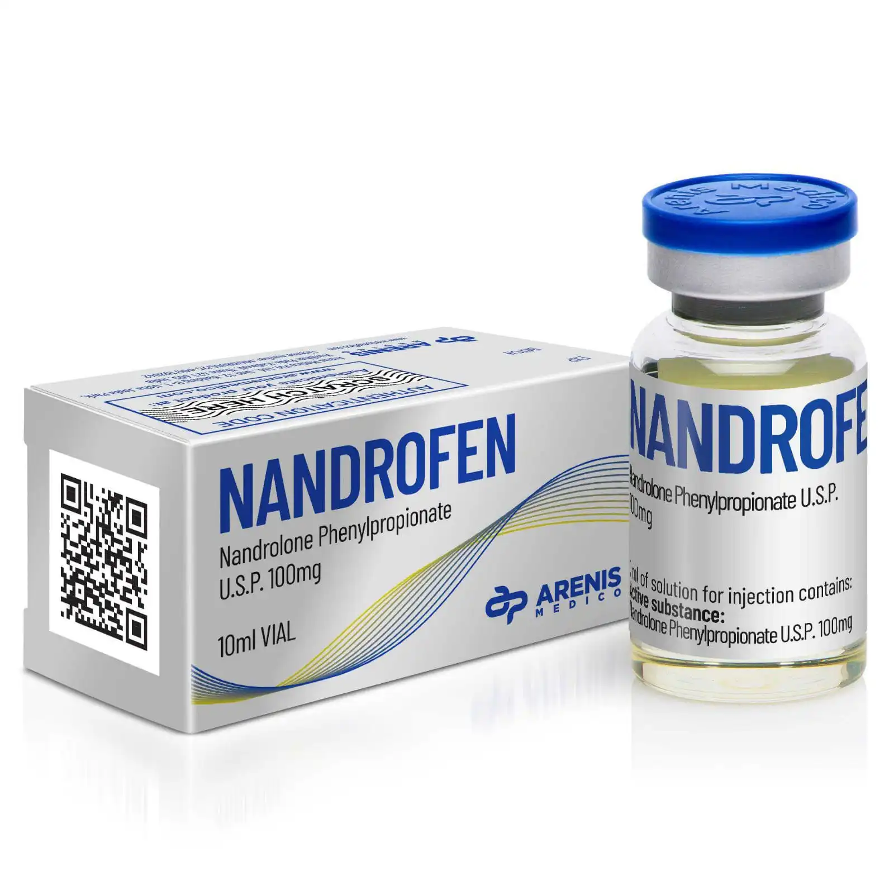

Nandrofen
Co to Nandrofen?
Nandrofen jest syntetycznym anabolikiem steroidowym. Nandrofen jest często stosowany w medycynie do leczenia anemii, osteoporozy oraz chorób wyniszczających mięśnie, ale jest również znany z używania w kulturystyce i sportach siłowych do zwiększenia masy mięśniowej i siły. .
Cena: 150 PLN